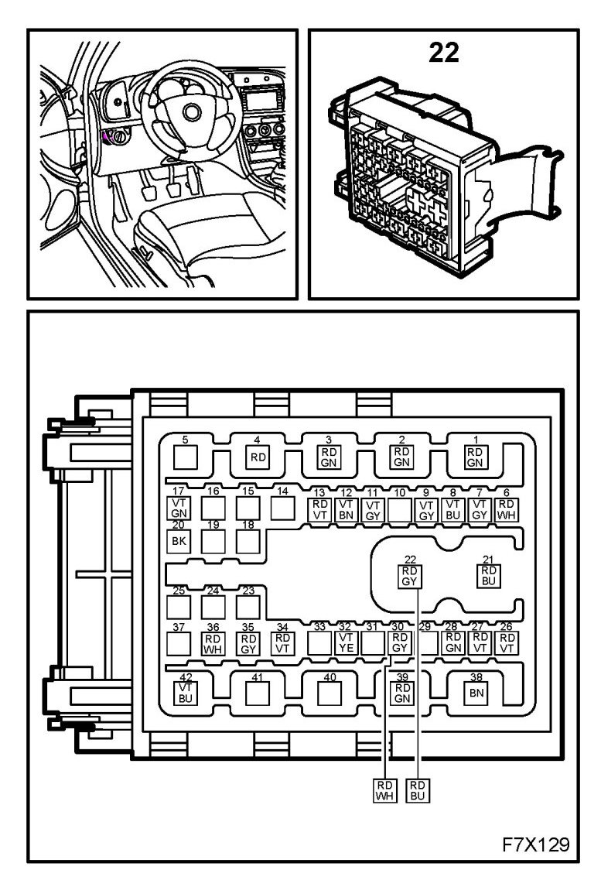
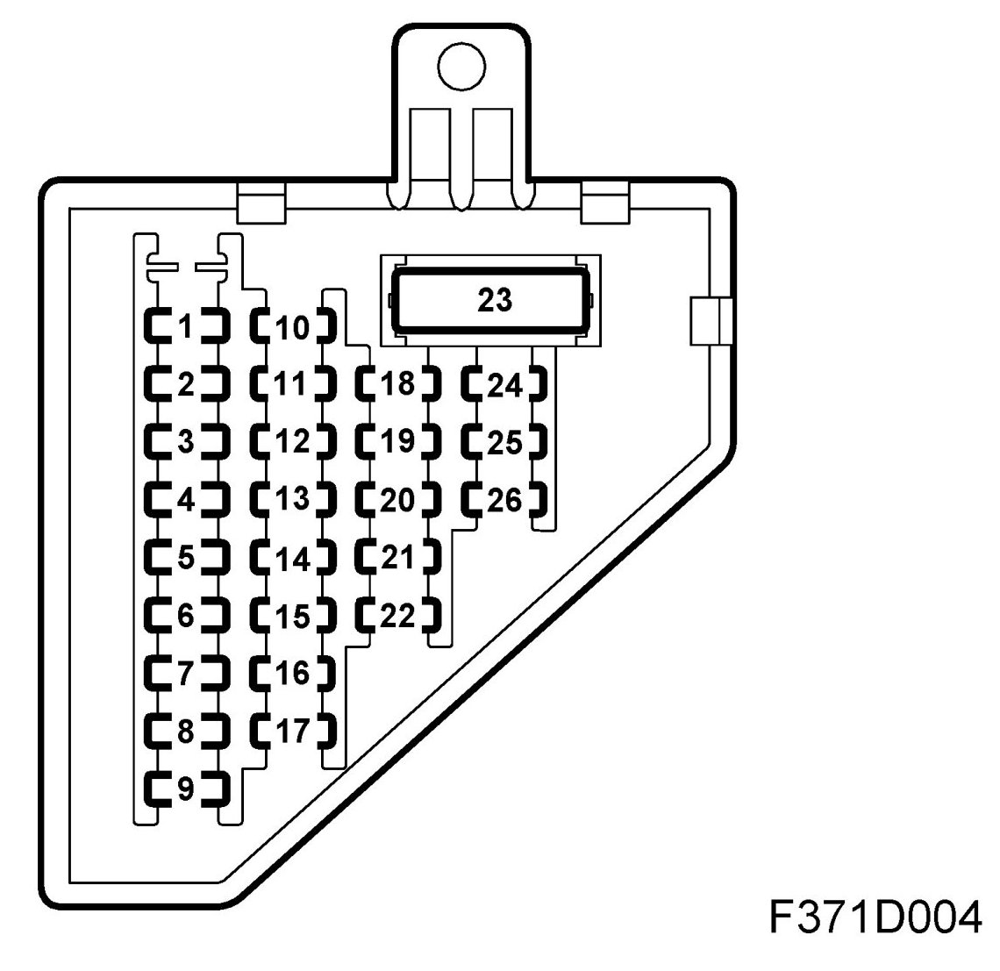
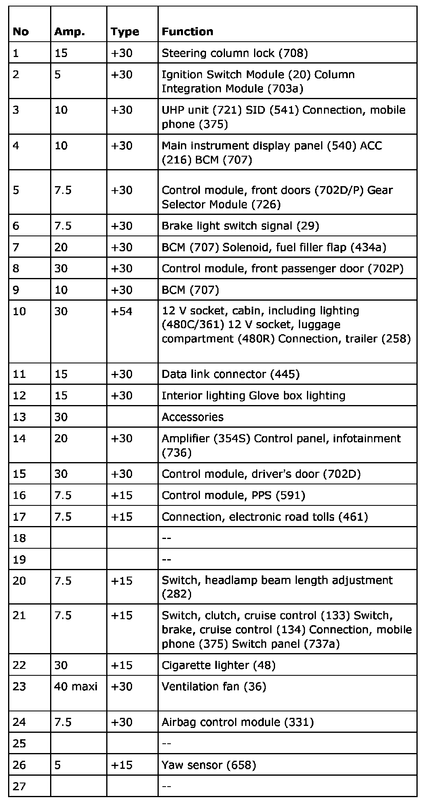
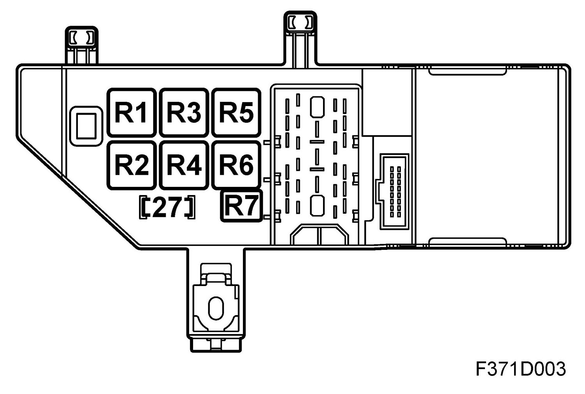
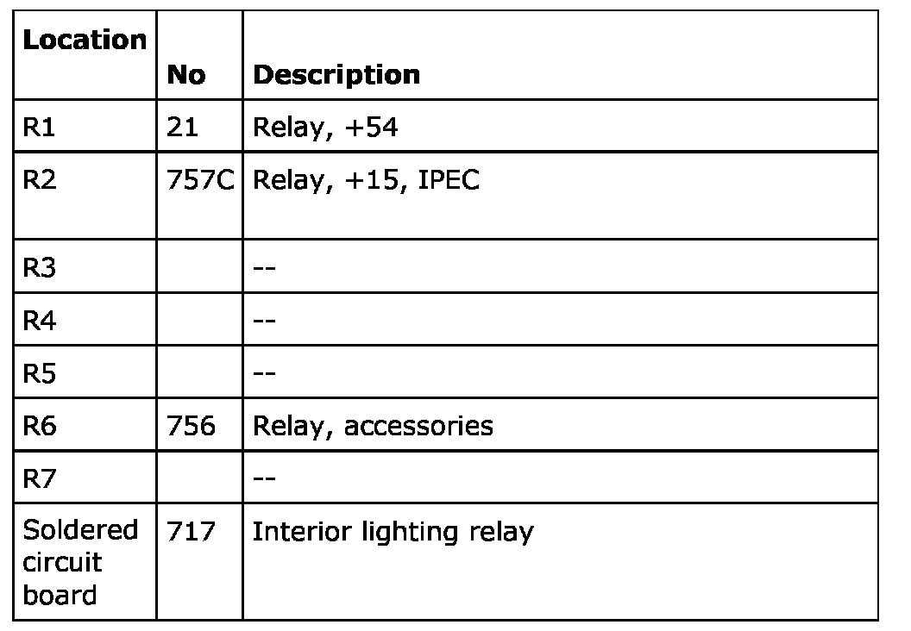

Relay Box: Application and ID
Instrument Panel Electrical Centre 22 (IPEC)
Location
The electrical centre is located in the short left hand side of the dashboard.
Main task
The electrical centre for most of the operations in the compartment and dashboard.
BCM control module 707 is located in the electrical centre
Type
Electrical centre with relays, maxi and micro-fuses.
Connect
The 16 pin connector from the BCM 707 control module is connected directly to the electrical centre.
The electrical centre is fed with +30 voltage from the engine bay electrical centre 342 and is connected to the dashboard harness via a 42 pin connector.

The following current circuits are distributed by the electrical centre:
1. Power supply +30, dashboard's electrical centre
2. Power supply +15, dashboard's electrical centre
3. Power supply +54, dashboard electrical centre
Fuses

The electrical centre can contain a greater number of fuses than those listed below. In such cases, these are not connected to a wiring harness.

Relays

The electrical centre can contain a greater number of relays than those listed below. In such cases, these are not connected to a wiring harness.
